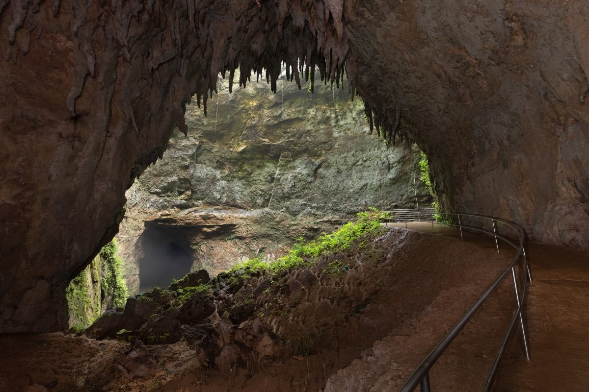
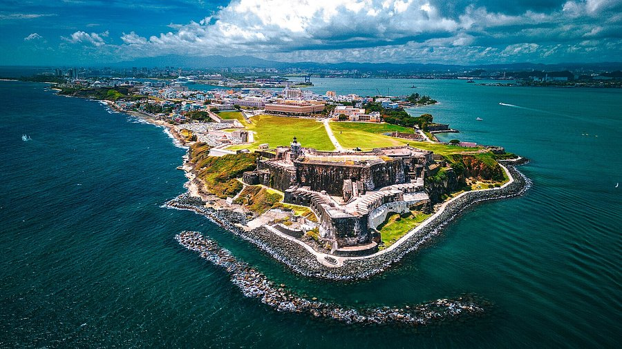

El Yunque National Forest is the only tropical rainforest in the United States national forest system, and is a sacred place in Puerto Rican culture: an inspiration for folklore legends, pop culture, and traditions on the island for centuries. If you love visiting nature in your trips, El Yunque Forest is the perfect place to visit! Some opportunities you may enjoy whilst visiting are:
If you love adventure, the Camuy River Caverns are perfect for you!The caverns are part of an extensive network of natural limestone caves and underground waterways carved out by the Río Camuy, the third-largest underground river in the world. While a guided tour offers a lighter experience, the larger cave system provides opportunities for more adventurous activities like hiking and spelunking for those seeking more thrills. While a guided tour offers a lighter experience, the larger cave system provides opportunities for more adventurous activities like hiking and spelunking for those seeking more thrills.
Flamenco Beach is located on the Island of Culebra which is part of the archipelago of Puerto Rico. Culebra is located approximately 17 miles east of main land Puerto Rico and is accessible by passenger ferry or chartered plane. The island of Culebra is part of the US territory of Puerto Rico, has more of an island vibe than the main land. If you like swimming in turquoise water, snorkeling or simply relaxing on a tropical beach you are sure to love visiting Flamenco Beach.

Old San Juan is home to some of the oldest and most revered religious landmarks in the Western Hemisphere. From the stunning San Juan Cathedral to the historic Capilla del Cristo, these sacred sites offer a glimpse into Puerto Rico’s deep Catholic roots. Whether you're exploring the island's spirituality or looking for the best things to do in Old San Juan, visiting these landmarks is a must for anyone interested in the island’s history and culture.
Guavate, located in Cayey, is the most well-known pork highway in Puerto Rico. These routes, scattered across the island, are home to a number of lechoneras, or restaurants that serve this beloved dish, making them a must-visit for food lovers and culture seekers alike. Although the main dish served is lechón – a whole pig slow-roasted to perfection, sometimes there are other available dishes if you want non-pork options. There are also side dishes that are served alongside the main dishes. These include:
If the information stated about each place still leaves you unsure and wanting more research to go into, here are some sites you can visit!